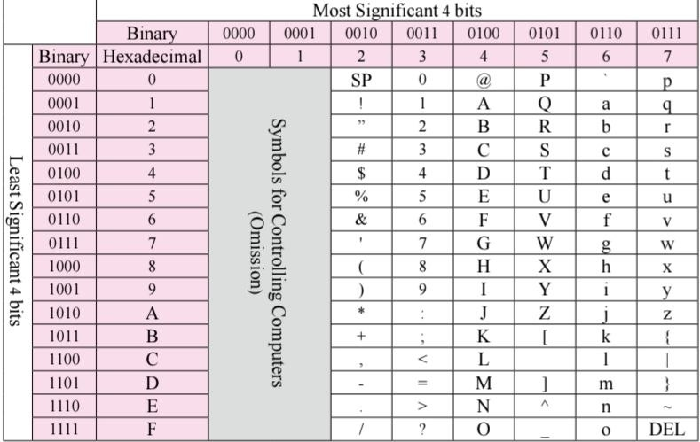

الكمبيوتر جهاز إلكتروني مبني بالكامل على الكهرباء، فهو لا يفهم الكلمات أو الحروف بل يترجم كل شيء إلى لغة ثنائية تتكون من (0 و 1) فقط، حيث يعني (1) وجود نبضة كهربائية و(0) انعدامها.
لكي نتمكن من كتابة الحروف الإنجليزية والرموز، اخترع العلماء نظام ASCII. وهو عبارة عن جدول يعطي لكل حرف رمزاً رقمياً فريداً (مثلاً حرف A الكبير يساوي الرقم 65 بالعشري و41 بالسداسي عشر Hex) ليفهمه المعالج فوراً.
لأن نظام ASCII كان ضيقاً ويتسع لـ 256 رمزاً فقط للحروف الإنجليزية، ظهر نظام Unicode المتطور الذي يستهلك مساحة أكبر (بايتات أكثر) ليستوعب لغات العالم بأكملها كالعربية، الصينية، وحتى الرموز التعبيرية (Emojis) 🤩.

درجتك: 10 / 10
تعليق تشجيعي مخصص للطالب بناء على أدائه المميز في الدرس.